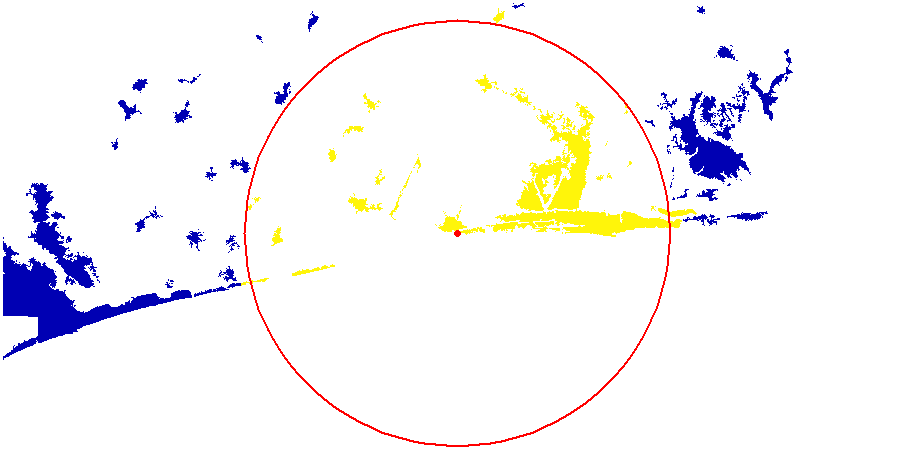

Un peu d’aide ?
# Construction d'un data.frame avec nom et adresse
... <- data.frame(name = "...",
addresse = ".........")
# Géocodage
library(tidygeocoder)
... <- geocode(..., ...)Utilisation du fond de carte, Géocodage, extraction de données et calcul d’itinéraire
Cette leçon vise à introduire différents types d’exploitation de la base de données géographique libre OpenStreetMap avec R. Les traitements et analyses présentés sont :
tidygeocoderleaflet et mapviewmaptiles, osmdata et osmextractsf, puis de temps avec osrmosrm
1. Créez un projet Rstudio, puis un script R
File/New Project/New Directory…
2. Géocodez une de ces deux adresses :
A. Adresse de l’IRSP : “Institut Régional de Santé Publique de Ouidah, Bénin”
B. Adresse du LaReSPD : “Université de Parakou, Bénin”
# Construction d'un data.frame avec nom et adresse
... <- data.frame(name = "...",
addresse = ".........")
# Géocodage
library(tidygeocoder)
... <- geocode(..., ...)3. Créez un point (objet sf) à partir de la latitude et de la longitude récupérées :
library(sf)
# Création objet sf
... <- st_as_sf(..., coords = c("...", "..."), crs = 4326)4. Transformez la projection de ce point en WGS84 / Pseudo-Mercator (CRS 3857), puis visualisez-le avec mapview
# Transformation de la projection
... <- st_transform(..., crs = 3857)
library(mapview)
mapview(...)5. Téléchargez les données suivantes :
| Intitulé | Téléchargement |
|---|---|
| Emprise des agglomérations urbaines (AFRICAPOLIS 2020) | Download |
6. Placez les données (décompressées) dans le répertoire de votre projet, de la façon suivante :

7. Importez la couche Africapolis dans R et transformez sa projection en en WGS84 / Pseudo-Mercator (CRS 3857).
... <- st_read("data/.../....shp", quiet = TRUE)
# Transformation de la projection en Pseudo-Mercator (3857)
... <- st_transform(..., crs = 3857)8. Sélectionnez uniquement les agglomérations béninoises
... <- ...[...$... == "BEN", ]9. Extrayez les centroïdes des polygones d’agglomération du Bénin
... <- st_centroid(...)9. Extrayez la tuile (fond de carte) OSM située au niveau des centroïdes extraits
Vous pouvez utiliser la fonction st_buffer() pour extraire une zone légèrement plus étendue que l’emprise des centroïdes.
library(maptiles)
... <- get_tiles(x = st_buffer(x = ..., dist = ...), zoom = 8, crop = TRUE)10. Affichez la tuile OSM, les centroïdes d’agglomérations et l’IRSP (ou LaReSPD) sur une carte
plot_tiles(...)
plot(st_geometry(...), col="..." , add = TRUE)
plot(st_geometry(...), col="..." , add = TRUE)
# Source des données ?
mtext(side = 1, line = -1, text = get_credit("OpenStreetMap"), col="tomato")11. Calculez trois matrices de distance différentes entre l’IRSP (ou LaReSPD) et les centroîdes des agglomérations béninoises.
A. Une matrice de distance euclidienne
B. Une matrice de distance par la route
C. Un matrice de distance temps par la route
# Distance Euclidienne
... <- st_distance(x = ..., y = ...)
# Distance et temps par la route
library(osrm)
... <- osrmTable(src = ...,
dst = ...,
measure = c("...", "..."))12. Calculez trois matrices de distance différentes entre l’IRSP (ou LaReSPD) et les centroîdes des agglomérations béninoises.
A. Une matrice de distance euclidienne
B. Une matrice de distance par la route
C. Un matrice de distance temps par la route
#------ Ajout des valeurs (+ conversion) comme attributs des agglomérations ---------#
# mètres -> kilomètres
africapolis_ben_pt$IRSP_eucli_dist <- as.numeric(mat_eucli_km) / 1000
# mètres -> kilomètres
africapolis_ben_pt$IRSP_route_km <- as.numeric(dist$distances) / 1000
# Minutes -> heures
africapolis_ben_pt$IRSP_route_hr <- as.numeric(dist$durations) / 60
#####---------------------- Calcul d'indice ----------------------#####
#------------------ Calcul indice d'accessibilité -------------------#
mean(africapolis_ben_pt$IRSP_eucli_dist)
max(africapolis_ben_pt$IRSP_eucli_dist)
mean(africapolis_ben_pt$IRSP_route_km)
max(africapolis_ben_pt$IRSP_route_km)
mean(africapolis_ben_pt$IRSP_route_hr)
max(africapolis_ben_pt$IRSP_route_hr)
#------------------ Calcul indice de performance ---------------------#
# Indice de sinuosité
africapolis_ben_pt$ind_sinuo <- round(africapolis_ben_pt$IRSP_route_km / africapolis_ben_pt$IRSP_eucli_dist, 2)
# Indice de vitesse sur route
africapolis_ben_pt$ind_speed <- round(africapolis_ben_pt$IRSP_route_km / africapolis_ben_pt$IRSP_route_hr, 1)
# Indice global de performance
africapolis_ben_pt$ind_perf <- round(africapolis_ben_pt$ind_speed / africapolis_ben_pt$ind_sinuo, 1)
#---------- Cartographie de l'indice global de performance----------#
library(mapsf)
plot_tiles(osm_tiles)
mf_map(x = africapolis_ben_pt,
var = "ind_perf",
type = "choro",
pal = "Dark Mint",
leg_pos = "bottomleft2",
leg_title = "Indice de perfomaance globale",
breaks = "jenks",
nbreaks = 8,
leg_val_rnd = 0,
border=NA,
cex = 2,
add = TRUE)
plot(st_geometry(IRSP_sf), border = "red", col="red" , lwd = 10, pch = 20, add = TRUE)
mtext(side = 1, line = -1, text = get_credit("OpenStreetMap"), col="tomato")
#--- Agglomération avec le plus haut indice global de performance ----#
# Sélection de l'agglomération présentant l'indice global le plus élevé
city_max_perf <- africapolis_ben_pt[africapolis_ben_pt$ind_perf == max(africapolis_ben_pt$ind_perf),]
#---------- Calcul d'itinéraire entre IRSP et city_max_perf ----------#
route <- osrmRoute(src = IRSP_sf, dst = city_max_perf)
# Affichage de l'itinéraire
plot_tiles(osm_tiles)
plot(st_geometry(route), col = "grey10", lwd = 6, add = TRUE)
plot(st_geometry(route), col = "grey90", lwd = 1, add = TRUE)
plot(st_geometry(IRSP_sf), border = NA, col="red", pch = 20, cex = 3, add = TRUE)
plot(st_geometry(city_max_perf), border = NA, col="red", pch = 20, cex = 3, add = TRUE)
mtext(side = 1, line = -1, text = get_credit("OpenStreetMap"), col="tomato")
[2. Téléchargez les données suivantes :]{.question}
| Intitulé | Téléchargement |
|:-----------------------------------------:|:---------------------------:|
| Emprise des agglomérations urbaines (AFRICAPOLIS 2020) | <a href="https://bit.ly/3wnQKeG" class="btn btn-outline-warning" role="button" aria-disabled="true"><i class="bi bi-cloud-arrow-down"></i> Download</a> |
[3. Placez les données (décompressées) dans le répertoire de votre projet, de la façon suivante :]{.question}
4. Importez le fichier africapolis_extract.shp
# Pour importer des données géographiques
library(sf)
... <- st_read()5. Vérifiez quelle est la projection cartographique utilisée. Re-projetez la couche dans la projection UTM zone 31N (EPSG : 32631 ).
# Pour connaitre le système de référence et de projection d'une couche
st_crs(...)
# Transformer le crs d'un objet sf
... <- st_transform(...)5. Affichez les géométries des agglomérations urbaines.
Astuce : Vous pouvez utiliser la package mapview qui permet d’afficher la couche sur différents fonds de carte dynamiques. Cela permet de contrôler le niveau de précision de vos données.
# Affichez les géométries d'un objet sf
plot(st_geometry(...))
# Afficher sur un fond de carte dynamique
library(mapview)
mapview(...)6. Calculez les surfaces de chaque agglomération urbaine. Enregistrez ces valeurs dans une nouvelle colonne.
# st_area() permet de calculer la surface des polygones d'un objet sf
...$... <- st_area(...)7. Calculez le nombre et la superficie totale des agglomérations urbaines, par pays.
library(dplyr)
... <- ... %>%
group_by(...) %>%
summarise(... = sum(...),
... = n())8. Créez une quatrième couche géographique (point) à partir des coordonnées de l’Institut Régional de Santé Publique, à Ouidah (Bénin) :
# Création d'un data.frame avec les colonnes "name", "lat" et "long"
IRSP <- data.frame(name = "...",
lat = ...,
long = ...)
# Création d'une couche géographique à partir de ces cordonnées
IRSP_geo <- st_as_sf(IRSP,
coords = c("...", "..."),
crs = ...)9. Créez une zone tampon de 50km autour de l’Institut Régional de Santé Publique
# Créer un zone tampon
... <- st_buffer(..., dist = ...)10. Détectez les agglomérations urbaines situées à moins de 50 km de l’IRSP
# Quelles agglomérations intersectent la zone tampon ?
...$... <- st_intersects(..., ..., sparse = ...)11. Affichez correctement les différentes couches. Utilisez la couleur pour indiquer les agglomérations urbaines qui intersectent la zone tampon. Exemple :

# Utilisez l'argument "add" pour superposer les couches
plot(st_geometry(...))
plot(...["..."], add = TRUE)
plot(st_geometry(...), add = TRUE)
plot(st_geometry(...), add = TRUE)12. Combien d’habitants résident dans les agglomérations urbaines qui intersectent la zone tampon ?
# Sélectionnez les agglomérations qui intersectent la zone tampon
... <- ...[...$... == TRUE, ]
# Calcul de la population totale de ces agglomérations
sum(...$...)